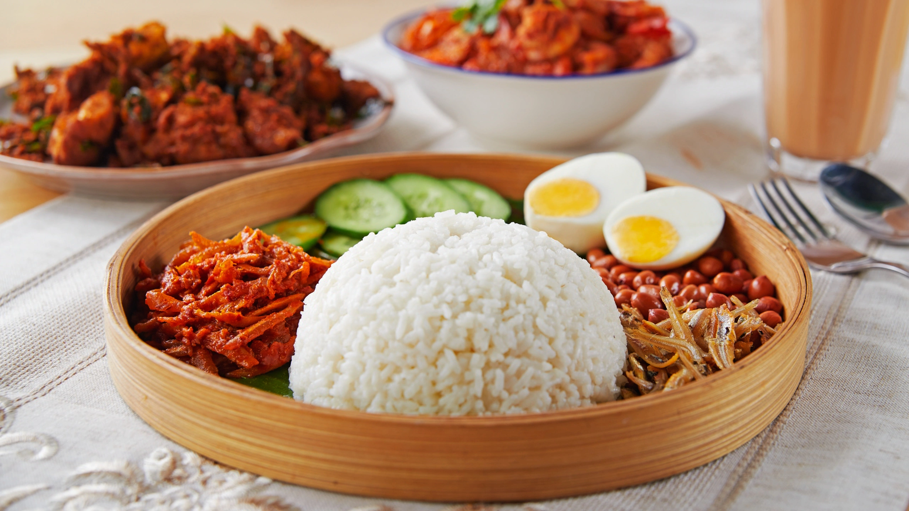

Welcome to the World of Nasi Lemak

Discover the rich history and cultural significance of Malaysia's beloved dish!
History of Nasi Lemak
Nasi Lemak has been a staple in Malaysian cuisine for generations. It originated as a farmer's meal, providing energy for a long day's work.
Significance in Creative Industry
- Inspires modern culinary innovations
- Represents Malaysian culture globally
- Supports local economy through food tourism
Nasi Lemak Gallery
